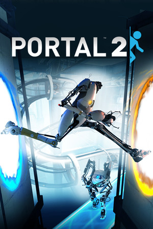
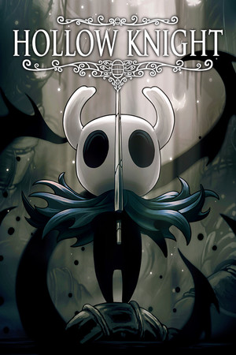
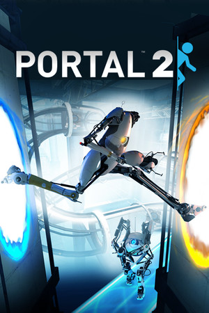
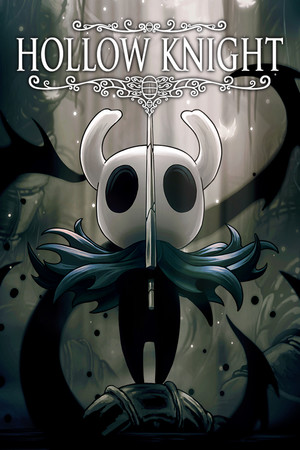

This site is a list of my favorite video games of all time.
I enjoy all of these games for different reasons.
Feel free to click on the game that catches your eye first and read about why I like it!
 |
|
||
 |
|
||
|
Click a game to read what makes me love it!
I would consider Portal 2 the best puzzle game of all time. A sequel to another great game, Portal 2 expands on the story of the last game and introduces a two brilliant new characters in Wheatley and Cave Johnson. Its puzzles are amazing; I can consistently come back to the game after a couple years and still feel like I am working hard to find the solution every time. This was also one of the first full video games I ever played, so it will always hold a special place in my heart.
Enter the Gungeon is a roguelite game, meaning that every time you lose you have to restart from the beginning with none of the items or perks you earned during that run. At first, this was too brutal for me, and I gave up. This was one of the first games that made me realize that I could find joy in the act of improving at a difficult game. Notably, the game expands as you play. As you improve and do better on each floor, you unlock items that you can have the chance to find in future runs. The game's art style is also very charming.
Dark Souls is famously a very difficult game. While this is certainly true, it is mainly because the game requires immense focus and understanding. The premise is simple. You are an undead who needs to defeat a bunch of strong opponents in order to regain your humanity. This game has a great memory attached to it—I remember I played it for the first time while two of my friends who had already played the game watched me and gave me tips. This was the night after our high school senior banquet and we played all night long until the sun came up. It helps that it was such a brilliant game that really teaches the value of dedication and practice.
Inscryption is a funny game to explain. It is important when talking about this game to avoid any possibility of spoilers. while the game appears to be a simple card game battler, it soon becomes an escape room, and then changes even more. The core gameplay of the card game is invigorating to master, and the story kept me on the edge of my seat the whole time. I highly recommend anyone and everyone to play this game, and I had many people play it just to see how they react to the incredible story.
Stardew Valley is a wonderfully cute game about inheriting a decrepit farm in a small town. You get to know the townsfolk, clean up your farm, and explore the surprisingly vast world. I loved playing this game and trying to make as much money as I could in a limited amount of time. I now love this game because it is one of the few games that my lovely girlfriend also plays. The game released a multiplayer mode somewhat recently, which has allowed us to have fun together in this cozy farming simulator.
Sekiro is a game similar to Dark Souls. Your goal is to defeat a list of difficult enemies. Both games are made by From Software. However with Sekiro Shadows Die Twice, Miyazaki (the game's director) changed the gameplay completely from that of Dark Souls. Instead of rolling to avoid the attacks of enemies, you are asked to 'parry' every blow by timing a button press exactly when an attack would have hit you. After enough parries, the enemy becomes staggered and you are able to perform a high damage move. I found this game incredibly worthwhile to play and I also enjoyed the pursuit towards perfection that this game challenges the player with. For a wonderful video on this see here.
Hollow Knight is the first "Metroidvania" game I have ever played that truly caught my attention and kept it. For those unaware, a Metroidvania merges the gameplay of the original Metroid games and the Castlevania games. For those who are still in the dark, (basically everyone) what this usually entails is places in the world that are clearly inaccessible will show up, and the goal is to get an item that lets you access that place and come back. Hollow Knight also is a difficult game. In a similar vein to the From Software games, the bosses (stronger enemies) in the game will ask of you more than you think yourself capable of. Half of the joy of this game comes from proving yourself wrong about that. An honorable mention for a similar type of game I enjoyed but have not yet finished: Check out Animal Well
Noita is a game of knowledge. You begin a very weak, very
flimsy wizard. It feels as if a small breeze might tear you
apart. But as the game goes on, you gather stronger spells,
stronger wands, and more knowledge of how the world works.
During this game I went from seeing a spell and not understanding
how to make it do more than a few damage, to being able to
create the sun. I mean that literally. I created two stars in
this game and then brought one to Heaven and one to Hell.
I love this game so much. Here is an image of my character
with the crown you get for doing that 'Sun Quest':
Outer Wilds places you as an alien in dying universe. You are stuck in a time loop that occurs when the star you call the sun goes supernova. Your goal is to translate the writing of an ancient civilization that seems to have built the very time loop you are in in order to find out what is going on. This game is all about figuring out what to do and how. Amazingly, once you know everything there is to learn, you are able to beat the game in just about 20 minutes. The DLC (expansion that adds content) for this game is also incredibly amazing and gives the same feeling that the original game gives you—a sort of nostalgia for the time before you knew what to do. This game can only be experienced once, and that is amazing.
Terraria is a game that is built so you can sink hours and hours into it, and that I have. It is a similar concept to Minecraft, where you mine for resources and craft items and build. However, Terraria is 2D and has much larger emphasis on skillful combat. I enjoyed playing it alone when I was a bit younger. It does lose a couple points in my mind now because my friends are much less fans of this game than they are of terraria. I would love to play this game with a big group of friends someday.
The Legend of Zelda Breath of the Wild earned its title as game of the year when it came out. It was an innovative spin on the Zelda formula that was designed perfectly for the Nintendo Switch and its in-and-out playstyle. I remember playing this game and messaging my friends who were also playing it about the places we found and the puzzles we solved. For those who have played it Eventide Island was a very memorable part of this game, and I believe it was ingenious game design.
Everybody knows Minecraft, so I will spare you the details with this one. Go play Minecraft. If you get bored. Add mods (modifications) to the game. If you get bored again, play with some friends, add some more mods, or both!